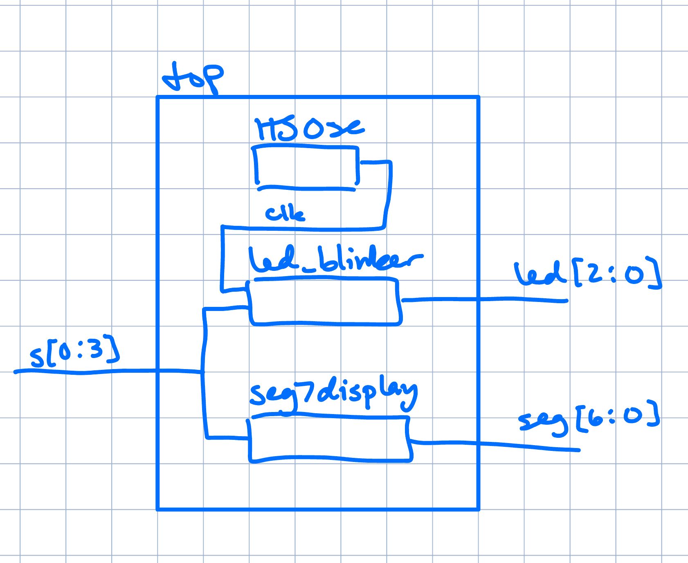
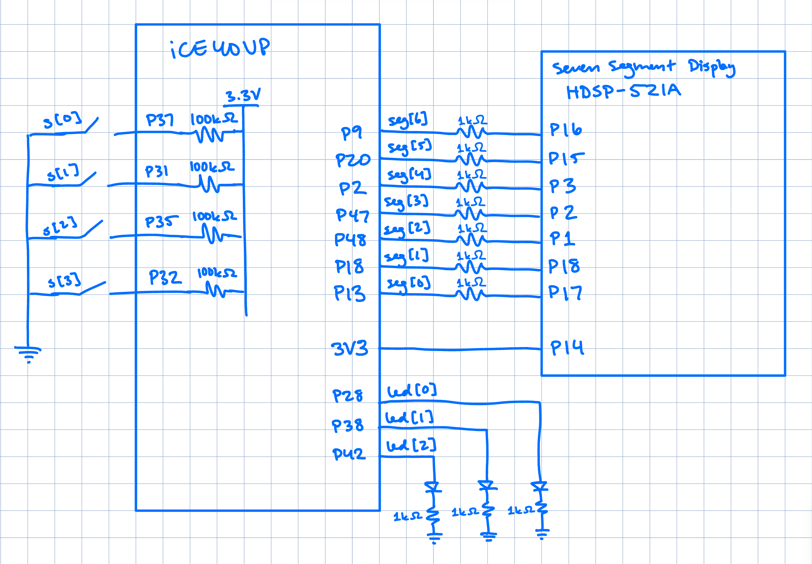

E155 Labs
Lab 1: FPGA and MCU Setup and Testing
Introduction
In this lab, we assembled our development board for the class and tested out our MCU and FPGA boards. We wrote Verilog modules and programmed the FPGA with them to control LEDs on the development board and an interfaced 7-segment display. Two of the LEDs were controlled with combinational logic while the third one used the FPGA on-board high-speed oscillator, divided down using a counter, to blink at a frequency of ~2.4Hz. The 7-segment display was configured to display each hex number according to 4 switches, representing a 4-bit binary number.
Design and Testing Methodology
The on-board high-speed oscillator (HSOSC) from the iCE40 UltraPlus primitive library was used to generate a clock signal at 24 MHz. Then, a counter was used to divide the high frequency clock signal down so that the blinking frequency could be easily visualized using one of the on-board LEDs. The design was developed using a simple clock divider module which drives the external LED. I created a separate module for the 7-segment display so I could use it in future assignments. It uses a case statement and for each 4-bit switch configuration input it lights up the corresponding hex number on the display.
Technical Documentation:
The source code for the project can be found in the associated Github repository.
Block Diagram
 Figure 1: Block diagram of the Verilog design.
The block diagram in Figure 1 demonstrates the overall architecture of the design. The top-level module top includes three submodules: the high-speed oscillator block (HSOSC), the led logic block containing the clock divider (led_blinker), and the 7-segment display module to decode the input to display respective hex numbers.
Schematic
 Figure 2: Schematic of the physical circuit.
Figure 2 shows the physical layout of the design. An internal 100k pullup resistor was used to ensure the active low switches were not floating. The output LEDs on the development board and 7-segment display were connected using a 1k current-limiting resistor to ensure the output current did not exceed the maximum output current of the FPGA I/O pins.
Results and Discussion
Because of the high enrollment in the class, I was not able to aquire all of the necessary materials to complete my board. I’m missing the 5V low dropout regulator as well as fully functional 24 pin female headers for my FPGA. However, these materials were not needed in this lab so I was still able to complete the programming of my board with successful outputs shown in the LEDs.
Conclusion
The design successfully blinked an external LED using the on-board high-speed oscillator and displayed hex numbers on a 7-segment display corresponding to a 4-bit input from 4 switches. I spent a total of 20 hours working on this lab.
AI Prototype Summary
Chat-GPT generated the following code in response to the prompt:
module led_blinker (
output logic led
);
// HFOSC primitive: Internal High Frequency Oscillator (12/48 MHz)
logic hfosc_clk;
SB_HFOSC #(
.CLKHF_DIV("0b00") // 00 = 48 MHz, 01 = 24 MHz, 10 = 12 MHz, 11 = 6 MHz
) hfosc_inst (
.CLKHFEN(1'b1), // Enable the oscillator
.CLKHFPU(1'b1), // Power up the oscillator
.CLKHF(hfosc_clk)
);
// Clock Divider
// 48,000,000 / 2 = 24,000,000 cycles for 2 Hz (0.5s period)
// So toggle every 24 million cycles
localparam int unsigned CLOCK_FREQ = 48_000_000;
localparam int unsigned BLINK_HZ = 2;
localparam int unsigned HALF_PERIOD_CYCLES = CLOCK_FREQ / (2 * BLINK_HZ); // 24M
logic [$clog2(HALF_PERIOD_CYCLES)-1:0] counter = '0;
// Clocked process using always_ff
always_ff @(posedge hfosc_clk) begin
if (counter == HALF_PERIOD_CYCLES - 1) begin
counter <= '0;
led <= ~led;
end else begin
counter <= counter + 1;
end
end
endmoduleIt threw an error because the SB_HFOSC wasn’t an existing module name. I passed in the following error to Chat-GPT and clarified that I was using the Radiant software. However, Chat-GPT didn’t know the correct module name and just changed the SB_HFOSC module name to OSC, which also threw a similar error. Only when I specified the module name was Chat-GPT able to generate code that successfully synthesized. Chat-GPT provided comments which improved clarity and readibility. It used localparam int unsigned to to initialize variables for clock dividing logic I believe, which I have not seen before. Next time I might read the error myself and try to figure out what the specific problem is before just sending it to Chat-GPT, which is not guaranteed to know all the context necessary for generating successful code (such as correct module names).